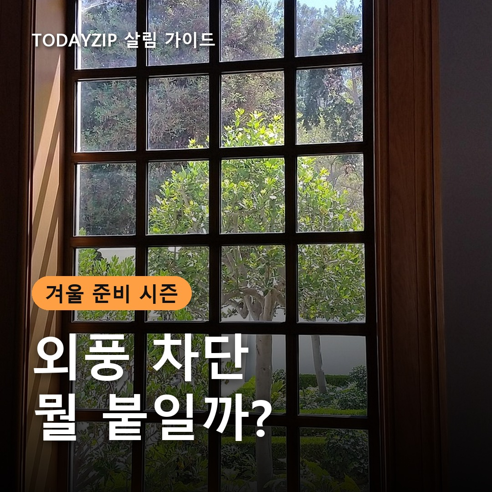
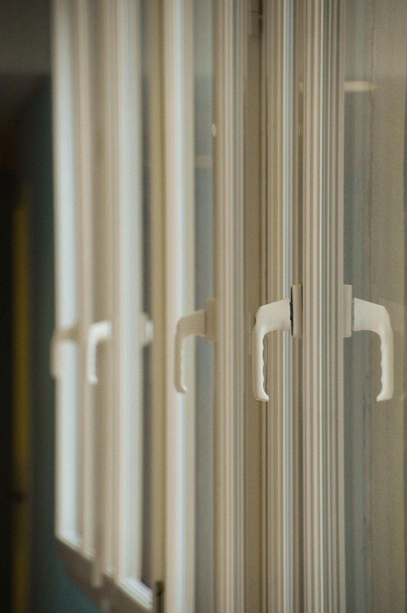
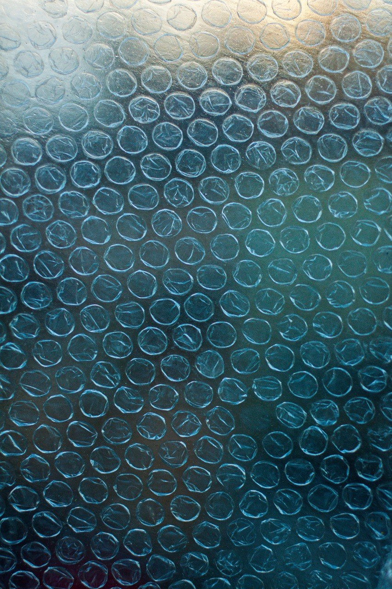

[사진 1: 썸네일]
아침저녁 공기가 차가워지면서 창가에 손을 대면 서늘한 바람이 느껴지기 시작했죠. 난방을 틀어도 발이 시리다면 집 어딘가로 바람이 새고 있을 가능성이 커요.
외풍 차단은 무엇을 붙이느냐보다 어디에 붙이느냐가 먼저예요. 오늘은 단열 뽁뽁이, 방풍비닐, 문풍지의 차이를 표로 비교하고, 우리 집에 맞는 걸 고르는 법과 붙이는 순서까지 정리해 드릴게요.
[사진 2]
찬 바람은 대부분 유리보다 틈으로 들어와요. 창틀과 창문 사이, 창문이 겹치는 부분, 현관문 아래가 대표적이에요. 틈을 그대로 두고 유리에만 무언가를 붙이면 바람은 계속 새어 들어와요.
창문을 닫은 상태에서 틈 주변에 손등을 천천히 대 보세요. 서늘한 바람이 느껴지는 곳을 표시해 두면 어떤 제품이 얼마나 필요한지 정하기 쉬워져요.
세 가지는 막는 위치가 달라요. 하나만 고르기보다 틈은 문풍지, 유리 면은 뽁뽁이나 방풍비닐처럼 나눠 쓰는 경우가 많아요.
| 구분 | 단열 뽁뽁이 | 방풍비닐 | 문풍지 |
|---|---|---|---|
| 막는 곳 | 유리 면 | 창문 전체(창틀 포함) | 문·창문 틈새 |
| 붙이는 법 | 물 뿌려 붙이기 또는 접착식 | 창틀 둘레에 테이프로 고정 | 틈에 맞춰 잘라 붙이기 |
| 장점 | 간편하고 떼기 쉬움 | 틈새 바람까지 함께 막음 | 간단하고 부담 없음 |
| 단점 | 채광·시야가 줄어듦 | 설치 후 창문을 열기 어려움 | 유리 면 냉기는 못 막음 |
| 잘 맞는 곳 | 잘 안 여는 창, 베란다 창 | 안 쓰는 방 창문, 외풍 심한 창 | 모든 문과 창문의 틈 |
[사진 3]
단열 뽁뽁이는 공기층이 유리의 찬 기운을 덜 전해 주는 원리예요. 그래서 택배 포장용보다 공기층이 두껍게 만들어진 단열용 제품을 고르는 게 좋아요. 물만 뿌려 붙이는 방식이라 전월세 집에서도 부담이 적어요.
다만 햇빛과 바깥 풍경이 함께 가려져요. 해가 잘 드는 창은 낮에 햇볕으로 데워지는 효과가 줄 수 있으니, 잘 열지 않는 창이나 베란다 창 위주로 쓰세요. 결로가 심한 창에 물 부착식을 쓰면 습기가 오래 남을 수 있으니 수시로 닦아 주세요.
[사진 4]
방풍비닐은 창틀 둘레에 테이프로 고정해 창문 전체를 한 겹 더 감싸요. 틈새 바람과 유리 냉기를 함께 줄일 수 있어서 오래된 창이나 외풍이 유난히 심한 방에 잘 맞아요.
대신 한 번 붙이면 그 창으로는 환기하기 어려워요. 바람이 잘 막힌 만큼 습기가 갇혀 결로나 곰팡이가 생길 수 있으니, 다른 창이나 문으로 하루 몇 번씩 꼭 환기하세요.
[사진 5]
문풍지는 문과 창문의 틈을 메우는 용도예요. 예전 스펀지형은 떼고 나면 자국이 남기 쉬웠는데, 요즘은 투명한 우레탄이나 실리콘 소재도 많아 눈에 덜 띄어요. 현관문 아래처럼 틈이 넓은 곳은 문 하단에 끼우는 형태가 편해요.
틈이 아주 넓어 문풍지로 메워지지 않으면 실리콘 보수가 필요할 수 있어요. 이 경우 전월세라면 집주인과 먼저 상의하세요.
외풍 차단은 순서만 지켜도 효과가 달라져요. 붙이기 전에 아래 항목을 확인하세요.
Q. 뽁뽁이를 붙이면 결로가 없어지나요?
A. 유리 표면이 덜 차가워져 줄어들 수는 있지만, 단열만으로는 결로가 해결되지 않아요. 실내 습도를 관리하고 환기를 함께 해야 해요.
Q. 봄이 되면 떼야 하나요?
A. 햇빛이 강해지는 계절에는 떼는 걸 권해요. 오래 두면 자국이 남거나 지저분해지기 쉽고, 창을 시원하게 열기도 어려워요.
정리하면, 틈새 바람은 문풍지, 잘 안 여는 창은 단열 뽁뽁이, 외풍이 심한 창은 방풍비닐이에요. 어떤 외풍 차단 방법이든 바람 새는 곳을 먼저 찾고, 환기할 창 하나는 남겨 두는 것만 기억하세요.
여러분 집은 어디서 바람이 제일 많이 새나요? 효과 본 외풍 차단 팁이 있다면 댓글로 나눠 주세요.
인스타그램 @todayzip.info 에서 살림 꿀팁을 30초 영상으로도 볼 수 있어요.